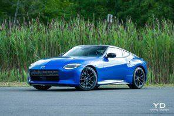

Nissan
Nissan Skyline
pagina principal

Nissan Skyline – Historia y Modelos Clave
Fabricante: Nissan (Japón)
Producción: Desde 1957 (en sus primeras versiones)
Modelos más famosos: Serie GT-R (especialmente R32, R33, R34)
Sucesor espiritual: Nissan GT-R (R35)
---
Origen e Historia
El Nissan Skyline comenzó como un sedán deportivo fabricado por la marca japonesa Prince Motor Company, que luego fue absorbida por Nissan. A partir de los años 80 y 90, el Skyline se convirtió en un ícono de alto rendimiento, con tracción total, motores turboalimentados y un diseño agresivo.
---
Modelos más famosos de Skyline GT-R
Skyline GT-R R32 (1989–1994)
Apodo: Godzilla (por la prensa australiana)
Motor: RB26DETT – 2.6L I6 twin-turbo
Potencia: 280 CV (limitado por acuerdo japonés)
Tracción: AWD (ATTESA E-TS)
Tecnología: Super-HICAS (dirección en las 4 ruedas)
Skyline GT-R R33 (1995–1998)
Más refinado y cómodo que el R32
Mismo motor RB26DETT, pero con mejoras electrónicas
Mejor aerodinámica y estabilidad en curvas
Skyline GT-R R34 (1999–2002)El más querido por muchos fans (famoso por Rápido y Furioso)
Motor: RB26DETT con alrededor de 280 CV (aunque en la práctica era más)
Pantalla multifunción con datos de rendimiento en tiempo real
Diseño compacto y agresivo
---
Estilo y Cultura
Estética japonesa clásica de los 90s
Famoso en el mundo del drift, carreras callejeras y tuning
Aparece en videojuegos como Gran Turismo, Need for Speed, y películas como Fast & Furious
Enormemente personalizable: suspensiones, turbos, ECU, carrocería
---
Precio (actual en mercado de coleccionistas):
R32: Desde $40,000 USD (según estado)
R33: $50,000 – $70,000 USD
R34: $120,000 – $300,000+ USD (versiones como V·Spec II Nür son rarísimas)
---
Dato extra:
El Nissan GT-R R35, aunque oficialmente ya no se llama “Skyline”, es el heredero espiritual del R34, con más tecnología y prestaciones modernas, pero muchos puristas siguen prefiriendo los Skyline originales.